旅遊景點吸引度調查
旅遊就是旅行遊覽活動。
泛指為旅客提供休閒設施與服務的產業。是一種複雜的社會現象，涉及政治、經濟、文化、歷史、地理、法律等各個社會領域。 旅遊也是一種休閒娛樂活動，具有異地性和暫時性等特徵。
一般而言，旅遊具有觀光和遊歷兩個不同的層次，前者歷時短，體驗較淺；後者反之。
出門旅遊已經變成每個人生活當中相當重要的部分，
請以不考慮預算為前提
下列幾個景點，請告訴我們，您是否有興趣到這些地方去走走
點選圖片可以得到更多資訊
旅遊景點列表
普通
有興趣
很想去
1
海上餐廳 巴拉蒂
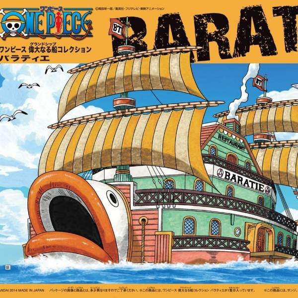
主廚哲普、副主廚山治，山治與哲普共同生活的地方
充滿美好回憶的地方。
遵循"絕對不能浪費食物的原則
其下擁有眾多全副武裝的戰鬥廚師。
餐廳外形是條巨型的船船兩頭有魚形狀的船首像，由於害怕戰鬥破壞餐廳內部設施，
整艘船能轉換成戰鬥時的狀態，被稱作"魚鰭"戰鬥場地(由船底到船的兩側的活動浮台)。
2
無風帶
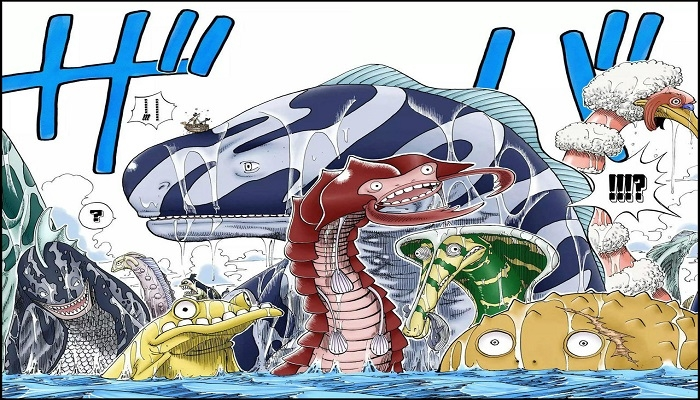
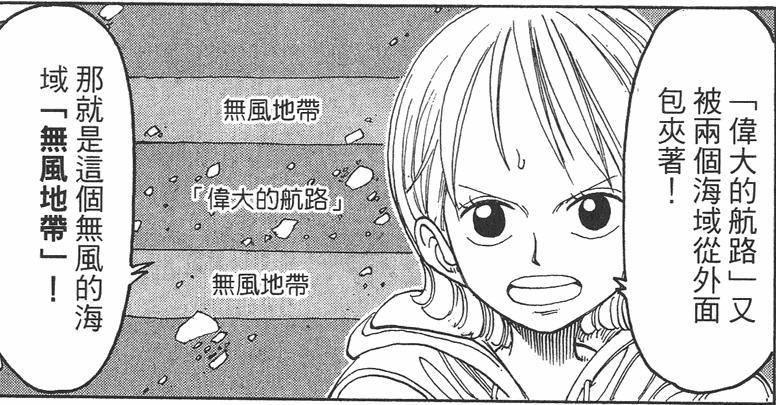
該海域沒有氣流，也沒有海流，是個永久風平浪靜的海域。
對於靠風力來移動的船隻來說根本不可能通過，無風帶是個極危險的海域。
這裡也是海王類生物（也就是巨型的海中巨獸）的大本營。
適合喜歡冒險的朋友
3
顛倒山
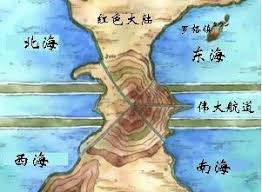
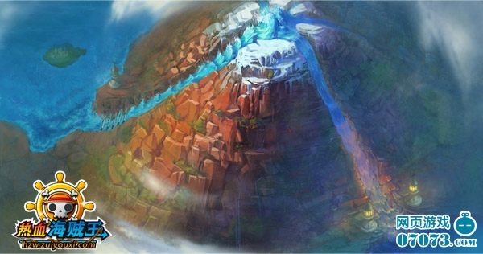
顛倒山 (Reverse Mountain李維斯山)位於紅土大陸的交會處
主要是由四個藍海的四個運河，匯集到顛倒山上。
是偉大航路的入口。
水流再往偉大航路直直下去。下去的出口是雙子峽。這裡也是顛倒山篇的主要舞台。
4
威士忌山
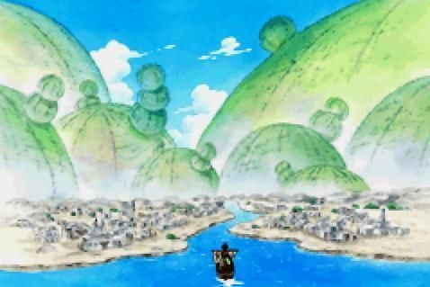
威士忌山峰是
秘密犯罪組織·巴洛克華克
的地盤
在此發現『Miss星期三』和『Mr.8』的真實身份其實是阿拉巴斯坦王國公主
從公主口中得知阿拉巴斯坦正處於水深火熱之中，以及王下七武海『Mr.0』沙·克洛克達爾的陰謀
5
磁鼓島
為了讓娜美得到治療
，路飛與香吉士帶著娜美爬上Dr.古蕾娃居住的城堡
在那裏認識了喬巴發生 了一些事情之後路飛邀請喬巴加入，但喬巴沒有答應，一開始還想吃人家能答應嗎？
同一時刻壞國王瓦爾波和他的兩個手下，回到城堡。為了守護Dr.西爾爾克的骷髏旗，喬巴勇敢地戰出來對抗瓦爾波
由於之前瓦爾波找過路飛等人的麻煩因此路飛和香吉士當然也毫不猶豫地加入戰鬥一觸即發
6
阿拉
巴斯坦
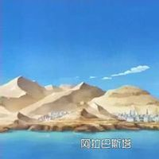
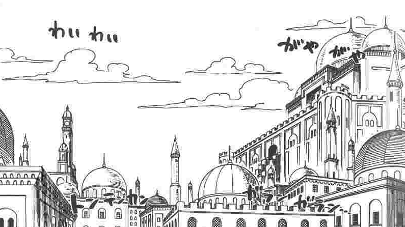
時任「王下七武海」的「Mr.0」沙·克洛克達爾
主導著秘密犯罪組織「巴洛克華克」施行「理想鄉作戰」
使這裡持續3年完全沒有下雨，順勢用計謀引起誤會、民怨，因而引發內戰，死傷慘重
後來在公主娜菲魯塔利·薇薇和草帽海賊團的活躍下，克洛克達爾被魯夫打敗
國家下的第一場雨同時也平息了戰火。羅賓加入草帽海賊團，薇薇公主成為草帽海賊團的摯友
7
空島
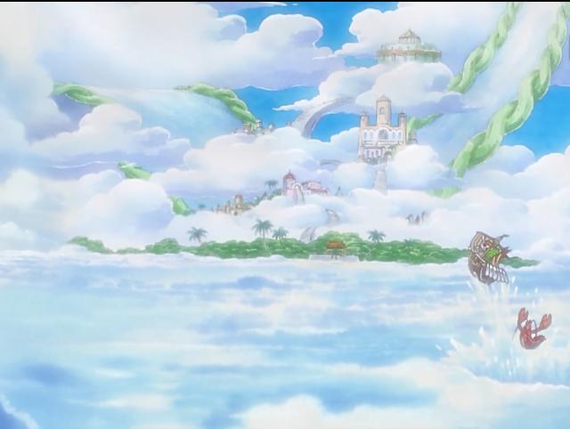
空海上的阿帕亞多原本是位於藍海的加亞島的一部分，在400年前被海流帶到了白白海
當時
黃金鐘香朵拉的燈火
的鐘聲響遍了神之國。
8
九蛇島
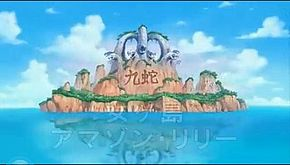
亞馬遜百合位處於「無風帶」，不受任何風暴氣候影響
但由於
島的周圍滿布龐大海王類的巢穴
，一般航海者都不能貿然進出，這使該島居民能與外界隔絕及不受外間騷擾
島上人口皆為女性
9
魚人島
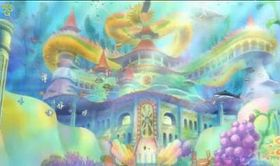
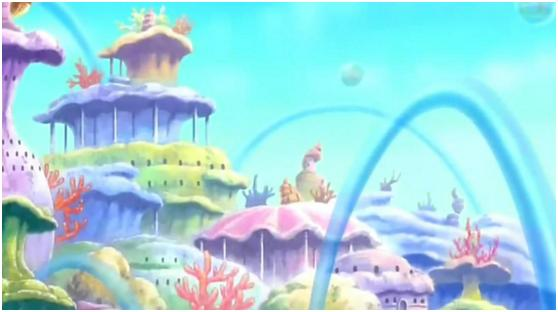
距今800年前，生存在「空白的100年」時期的人類喬伊波伊曾和當時和他活在同一年代的人魚公主
立下了某個約定，但後來卻因故無法實踐
在海之森的珊瑚林留下對魚人島謝罪的歷史本文。魚人島的居民也因此開始守護著島上的古老巨船「諾亞」
並深信將來會有代替喬伊波伊履行約定的人選出現
10
其他
上面沒提到，但您也很想要去的地方：
您的基本資料：
暱稱：
email：
性別：
淑女
紳士
年齡：
15以下
16-25
26-35
36-45
46以上
提交
到最上頁